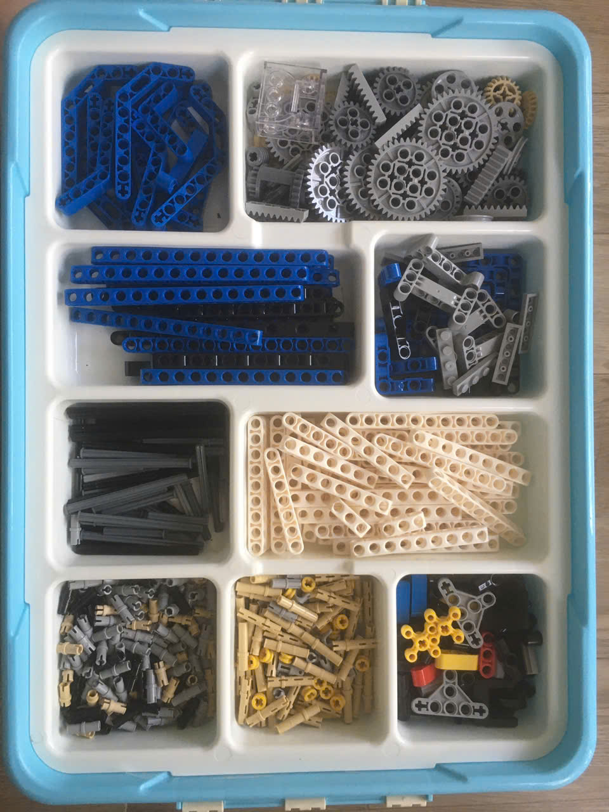

Để tiện thao tác, các sắp xếp lego vào khay theo như hình dưới đây. Các thiết bị còn lại thì bỏ vào thùng:

Khám phá các bộ học cụ STEM và Robot lập trình
Để tiện thao tác, các sắp xếp lego vào khay theo như hình dưới đây. Các thiết bị còn lại thì bỏ vào thùng:

Tải phần mềm KIDDY: KIDDY.1.0.0.Setup.exe
Tải code sau và mở với kiddy: 3-traffic-lights.ob
Các bạn lắp ráp tùy thích hoặc theo bài 5 (Line-follower).
Tải code sau và mở với kiddy: 4-remote-control.ob
Theo hướng dẫn lắp ráp bên dưới và tải code sau và mở với kiddy: 5-line-follower.ob